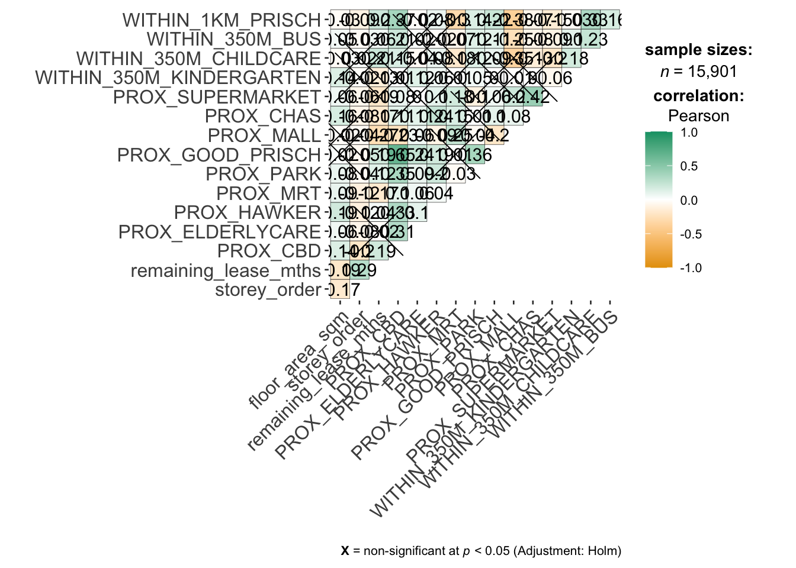
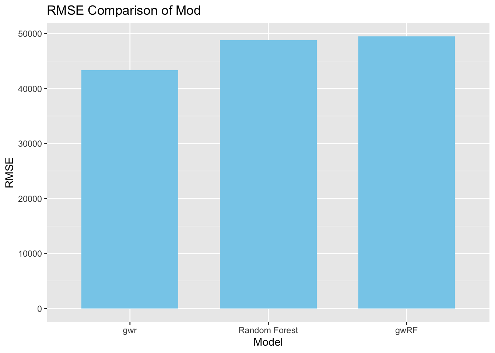
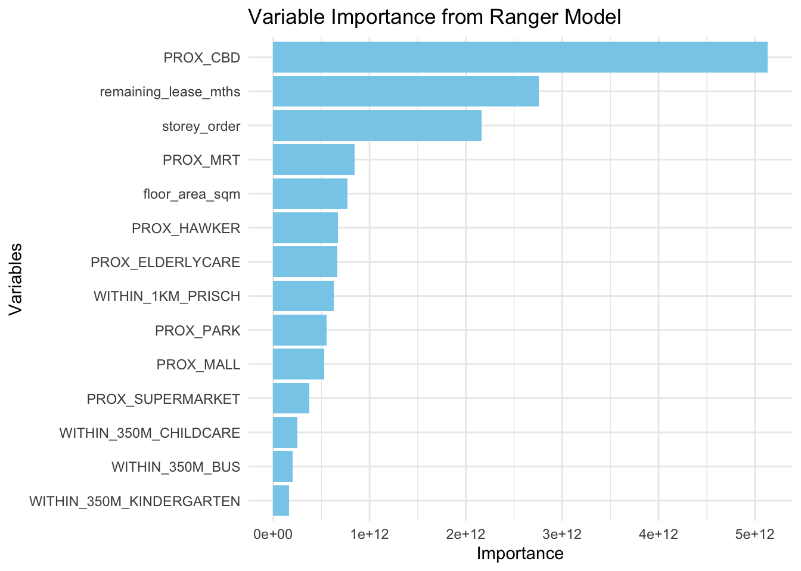

pacman::p_load(sf, spdep, GWmodel, SpatialML, tmap, rsample, yardstick, tidyverse, knitr, kableExtra, spatialRF)ICE 12: Predictive Modelling
Load R packages
Data
Import
mdata <- read_rds('data/rds/mdata.rds')Data Sampling
Calibrating predictive models are computationally intensive, especially random forest method. For quick prototyping, a 10% sample will be selected at random from data using sample_n().
# Random sampling to reduce file size
set.seed(69)
HDB_sample <- mdata %>% sample_n(1500)Check for overlapping point features
overlapping_points <- HDB_sample %>%
mutate(overlap = length(st_equals(., .)) > 1)
summary(overlapping_points$overlap) Mode TRUE
logical 1500
Important
When using GWmodel to do predictive modelling, remember to handle overlapping points.
# move overlapping points by 5 metres
HDB_sample <- HDB_sample %>% st_jitter(amount = 5)Train-test split
set.seed(69)
resale_split <- initial_split(
HDB_sample,
prop = 6.67/10)
train_data <- training(resale_split)
test_data <- testing(resale_split)write_rds(train_data, 'data/rds/train_data.rds')
write_rds(test_data, 'data/rds/test_data.rds')train_data <- read_rds('data/rds/train_data.rds')
test_data <- read_rds('data/rds/test_data.rds')Check for multi-collinearity
mdata_nogeo <- mdata %>% st_drop_geometry()
ggstatsplot::ggcorrmat(mdata_nogeo[,2:17])
Creating Predictive Models
price_mlr <- lm(resale_price ~ floor_area_sqm +
storey_order + remaining_lease_mths +
PROX_CBD + PROX_ELDERLYCARE + PROX_HAWKER +
PROX_MRT + PROX_PARK + PROX_MALL +
PROX_SUPERMARKET + WITHIN_350M_KINDERGARTEN +
WITHIN_350M_CHILDCARE + WITHIN_350M_BUS +
WITHIN_1KM_PRISCH,
data=train_data)
olsrr::ols_regress(price_mlr) Model Summary
--------------------------------------------------------------------------
R 0.875 RMSE 61190.198
R-Squared 0.765 MSE 3801259172.785
Adj. R-Squared 0.762 Coef. Var 14.092
Pred R-Squared 0.757 AIC 24913.362
MAE 47150.424 SBC 24991.886
--------------------------------------------------------------------------
RMSE: Root Mean Square Error
MSE: Mean Square Error
MAE: Mean Absolute Error
AIC: Akaike Information Criteria
SBC: Schwarz Bayesian Criteria
ANOVA
-------------------------------------------------------------------------------
Sum of
Squares DF Mean Square F Sig.
-------------------------------------------------------------------------------
Regression 1.218497e+13 14 870354860546.637 228.965 0.0000
Residual 3.74424e+12 985 3801259172.785
Total 1.592921e+13 999
-------------------------------------------------------------------------------
Parameter Estimates
------------------------------------------------------------------------------------------------------------------
model Beta Std. Error Std. Beta t Sig lower upper
------------------------------------------------------------------------------------------------------------------
(Intercept) 90466.098 33430.775 2.706 0.007 24862.370 156069.825
floor_area_sqm 3020.243 288.363 0.172 10.474 0.000 2454.367 3586.119
storey_order 16500.302 1030.956 0.273 16.005 0.000 14477.179 18523.425
remaining_lease_mths 348.840 14.515 0.422 24.033 0.000 320.356 377.323
PROX_CBD -16638.865 634.581 -0.567 -26.220 0.000 -17884.150 -15393.580
PROX_ELDERLYCARE -14828.402 3287.203 -0.075 -4.511 0.000 -21279.128 -8377.676
PROX_HAWKER -23373.419 4112.235 -0.095 -5.684 0.000 -31443.167 -15303.671
PROX_MRT -35413.609 5564.056 -0.112 -6.365 0.000 -46332.376 -24494.843
PROX_PARK -9389.060 4708.076 -0.034 -1.994 0.046 -18628.072 -150.049
PROX_MALL -27051.554 6462.558 -0.077 -4.186 0.000 -39733.517 -14369.591
PROX_SUPERMARKET -17355.061 13668.343 -0.021 -1.270 0.204 -44177.480 9467.357
WITHIN_350M_KINDERGARTEN 6820.030 2017.783 0.055 3.380 0.001 2860.383 10779.678
WITHIN_350M_CHILDCARE -5589.889 1101.664 -0.089 -5.074 0.000 -7751.768 -3428.010
WITHIN_350M_BUS 1436.217 711.131 0.034 2.020 0.044 40.711 2831.723
WITHIN_1KM_PRISCH -9385.712 1582.021 -0.117 -5.933 0.000 -12490.232 -6281.193
------------------------------------------------------------------------------------------------------------------Calibrating bandwidth
gwr_bw_train_ad <- bw.gwr(resale_price ~ floor_area_sqm +
storey_order + remaining_lease_mths +
PROX_CBD + PROX_ELDERLYCARE + PROX_HAWKER +
PROX_MRT + PROX_PARK + PROX_MALL +
PROX_SUPERMARKET + WITHIN_350M_KINDERGARTEN +
WITHIN_350M_CHILDCARE + WITHIN_350M_BUS +
WITHIN_1KM_PRISCH,
data=train_data,
approach="CV",
kernel="gaussian",
adaptive=TRUE,
longlat=FALSE)Adaptive bandwidth: 625 CV score: 3.603441e+12
Adaptive bandwidth: 394 CV score: 3.41558e+12
Adaptive bandwidth: 250 CV score: 3.129931e+12
Adaptive bandwidth: 162 CV score: 2.760279e+12
Adaptive bandwidth: 107 CV score: 2.354514e+12
Adaptive bandwidth: 73 CV score: 1.949186e+12
Adaptive bandwidth: 52 CV score: 1.729738e+12
Adaptive bandwidth: 39 CV score: 1.63804e+12
Adaptive bandwidth: 31 CV score: 1.56685e+12
Adaptive bandwidth: 26 CV score: 1.512703e+12
Adaptive bandwidth: 23 CV score: 1.483051e+12
Adaptive bandwidth: 21 CV score: 1.47094e+12
Adaptive bandwidth: 19 CV score: 1.437989e+12
Adaptive bandwidth: 19 CV score: 1.437989e+12 gwr_bw_train_ad[1] 19Calibrating Model
gwr_ad <- gwr.basic(
formula = resale_price ~ floor_area_sqm +
storey_order + remaining_lease_mths +
PROX_CBD + PROX_ELDERLYCARE + PROX_HAWKER +
PROX_MRT + PROX_PARK + PROX_MALL +
PROX_SUPERMARKET + WITHIN_350M_KINDERGARTEN +
WITHIN_350M_CHILDCARE + WITHIN_350M_BUS +
WITHIN_1KM_PRISCH,
data = train_data,
bw=20,
kernel = 'gaussian',
adaptive = TRUE,
longlat = FALSE)gwr_ad ***********************************************************************
* Package GWmodel *
***********************************************************************
Program starts at: 2024-11-11 10:06:06.87469
Call:
gwr.basic(formula = resale_price ~ floor_area_sqm + storey_order +
remaining_lease_mths + PROX_CBD + PROX_ELDERLYCARE + PROX_HAWKER +
PROX_MRT + PROX_PARK + PROX_MALL + PROX_SUPERMARKET + WITHIN_350M_KINDERGARTEN +
WITHIN_350M_CHILDCARE + WITHIN_350M_BUS + WITHIN_1KM_PRISCH,
data = train_data, bw = 20, kernel = "gaussian", adaptive = TRUE,
longlat = FALSE)
Dependent (y) variable: resale_price
Independent variables: floor_area_sqm storey_order remaining_lease_mths PROX_CBD PROX_ELDERLYCARE PROX_HAWKER PROX_MRT PROX_PARK PROX_MALL PROX_SUPERMARKET WITHIN_350M_KINDERGARTEN WITHIN_350M_CHILDCARE WITHIN_350M_BUS WITHIN_1KM_PRISCH
Number of data points: 1000
***********************************************************************
* Results of Global Regression *
***********************************************************************
Call:
lm(formula = formula, data = data)
Residuals:
Min 1Q Median 3Q Max
-180328 -38054 -683 36567 315677
Coefficients:
Estimate Std. Error t value Pr(>|t|)
(Intercept) 90466.10 33430.78 2.706 0.006926 **
floor_area_sqm 3020.24 288.36 10.474 < 2e-16 ***
storey_order 16500.30 1030.96 16.005 < 2e-16 ***
remaining_lease_mths 348.84 14.51 24.033 < 2e-16 ***
PROX_CBD -16638.87 634.58 -26.220 < 2e-16 ***
PROX_ELDERLYCARE -14828.40 3287.20 -4.511 7.23e-06 ***
PROX_HAWKER -23373.42 4112.23 -5.684 1.73e-08 ***
PROX_MRT -35413.61 5564.06 -6.365 2.99e-10 ***
PROX_PARK -9389.06 4708.08 -1.994 0.046400 *
PROX_MALL -27051.55 6462.56 -4.186 3.09e-05 ***
PROX_SUPERMARKET -17355.06 13668.34 -1.270 0.204482
WITHIN_350M_KINDERGARTEN 6820.03 2017.78 3.380 0.000753 ***
WITHIN_350M_CHILDCARE -5589.89 1101.66 -5.074 4.65e-07 ***
WITHIN_350M_BUS 1436.22 711.13 2.020 0.043693 *
WITHIN_1KM_PRISCH -9385.71 1582.02 -5.933 4.12e-09 ***
---Significance stars
Signif. codes: 0 '***' 0.001 '**' 0.01 '*' 0.05 '.' 0.1 ' ' 1
Residual standard error: 61650 on 985 degrees of freedom
Multiple R-squared: 0.7649
Adjusted R-squared: 0.7616
F-statistic: 229 on 14 and 985 DF, p-value: < 2.2e-16
***Extra Diagnostic information
Residual sum of squares: 3.74424e+12
Sigma(hat): 61251.48
AIC: 24913.36
AICc: 24913.92
BIC: 24102.41
***********************************************************************
* Results of Geographically Weighted Regression *
***********************************************************************
*********************Model calibration information*********************
Kernel function: gaussian
Adaptive bandwidth: 20 (number of nearest neighbours)
Regression points: the same locations as observations are used.
Distance metric: Euclidean distance metric is used.
****************Summary of GWR coefficient estimates:******************
Min. 1st Qu. Median 3rd Qu.
Intercept -1.7405e+06 -2.4062e+05 -3.0072e+04 2.1409e+05
floor_area_sqm -1.2997e+03 1.4583e+03 2.4564e+03 3.6592e+03
storey_order 3.0168e+03 9.1914e+03 1.1739e+04 1.4445e+04
remaining_lease_mths 3.6313e+01 3.5777e+02 4.5267e+02 5.5052e+02
PROX_CBD -1.7026e+05 -2.8254e+04 -1.4362e+04 -8.6330e+02
PROX_ELDERLYCARE -1.8293e+05 -2.9668e+04 -4.4504e+03 1.0826e+04
PROX_HAWKER -1.9349e+05 -4.8725e+04 -1.9114e+04 5.5820e+03
PROX_MRT -2.1062e+05 -8.2074e+04 -4.8453e+04 -2.0366e+04
PROX_PARK -3.4551e+05 -3.7735e+04 -1.5888e+04 1.0830e+04
PROX_MALL -2.0634e+05 -4.4347e+04 -1.6886e+04 1.4353e+04
PROX_SUPERMARKET -1.5267e+05 -4.9164e+04 -1.2041e+04 3.6799e+04
WITHIN_350M_KINDERGARTEN -7.5937e+04 -8.0220e+03 -1.6369e+03 5.1528e+03
WITHIN_350M_CHILDCARE -1.5976e+04 -3.9106e+03 -1.3080e+03 1.9130e+03
WITHIN_350M_BUS -1.1308e+04 -2.2344e+03 1.4197e+02 2.4817e+03
WITHIN_1KM_PRISCH -2.9228e+04 -7.3998e+03 9.0318e+02 7.8174e+03
Max.
Intercept 1499993.44
floor_area_sqm 12594.16
storey_order 21051.55
remaining_lease_mths 720.05
PROX_CBD 116803.68
PROX_ELDERLYCARE 231607.07
PROX_HAWKER 372679.79
PROX_MRT 98482.15
PROX_PARK 85373.97
PROX_MALL 137276.75
PROX_SUPERMARKET 185347.82
WITHIN_350M_KINDERGARTEN 26797.50
WITHIN_350M_CHILDCARE 16620.42
WITHIN_350M_BUS 9369.08
WITHIN_1KM_PRISCH 52656.77
************************Diagnostic information*************************
Number of data points: 1000
Effective number of parameters (2trace(S) - trace(S'S)): 400.0657
Effective degrees of freedom (n-2trace(S) + trace(S'S)): 599.9343
AICc (GWR book, Fotheringham, et al. 2002, p. 61, eq 2.33): 24083.31
AIC (GWR book, Fotheringham, et al. 2002,GWR p. 96, eq. 4.22): 23437.7
BIC (GWR book, Fotheringham, et al. 2002,GWR p. 61, eq. 2.34): 24360.86
Residual sum of squares: 638286734464
R-square value: 0.9599298
Adjusted R-square value: 0.9331644
***********************************************************************
Program stops at: 2024-11-11 10:06:07.39985 Predicting using test data
gwr_pred <- gwr.predict(
formula = resale_price ~ floor_area_sqm +
storey_order + remaining_lease_mths +
PROX_CBD + PROX_ELDERLYCARE + PROX_HAWKER +
PROX_MRT + PROX_PARK + PROX_MALL +
PROX_SUPERMARKET + WITHIN_350M_KINDERGARTEN +
WITHIN_350M_CHILDCARE + WITHIN_350M_BUS +
WITHIN_1KM_PRISCH,
data = train_data,
predictdata = test_data,
bw=20,
kernel = 'gaussian',
adaptive = TRUE,
longlat = FALSE)gwr_pred ***********************************************************************
* Package GWmodel *
***********************************************************************
Program starts at: 2024-11-11 10:48:16.169217
Call:
gwr.predict(formula = resale_price ~ floor_area_sqm + storey_order +
remaining_lease_mths + PROX_CBD + PROX_ELDERLYCARE + PROX_HAWKER +
PROX_MRT + PROX_PARK + PROX_MALL + PROX_SUPERMARKET + WITHIN_350M_KINDERGARTEN +
WITHIN_350M_CHILDCARE + WITHIN_350M_BUS + WITHIN_1KM_PRISCH,
data = train_data, predictdata = test_data, bw = 20, kernel = "gaussian",
adaptive = TRUE, longlat = FALSE)
Dependent (y) variable for prediction: resale_price
Independent variables: floor_area_sqm storey_order remaining_lease_mths PROX_CBD PROX_ELDERLYCARE PROX_HAWKER PROX_MRT PROX_PARK PROX_MALL PROX_SUPERMARKET WITHIN_350M_KINDERGARTEN WITHIN_350M_CHILDCARE WITHIN_350M_BUS WITHIN_1KM_PRISCH
Number of data points: 1000
***********************************************************************
* Results of Geographically Weighted Regression for prediction *
***********************************************************************
*********************Model calibration information*********************
Kernel function: gaussian
Adaptive bandwidth: 20 (number of nearest neighbours)
Distance metric: Euclidean distance metric is used.
****************Summary of GWR coefficient estimates:******************
Min. 1st Qu. Median
Intercept_coef -1.1551e+06 -2.0636e+05 -1.3350e+03
floor_area_sqm_coef -1.0481e+03 1.3203e+03 2.4342e+03
storey_order_coef 3.1437e+03 8.7333e+03 1.1475e+04
remaining_lease_mths_coef 3.6529e+01 3.5126e+02 4.4161e+02
PROX_CBD_coef -9.9040e+04 -2.7690e+04 -1.3701e+04
PROX_ELDERLYCARE_coef -1.5240e+05 -3.6850e+04 -7.0707e+03
PROX_HAWKER_coef -1.4767e+05 -5.3183e+04 -2.1153e+04
PROX_MRT_coef -2.1657e+05 -8.2457e+04 -4.7512e+04
PROX_PARK_coef -2.4447e+05 -4.2049e+04 -1.9292e+04
PROX_MALL_coef -1.9502e+05 -4.1174e+04 -1.3246e+04
PROX_SUPERMARKET_coef -1.2785e+05 -4.4032e+04 -6.6330e+03
WITHIN_350M_KINDERGARTEN_coef -5.8800e+04 -8.5313e+03 -2.3081e+03
WITHIN_350M_CHILDCARE_coef -1.6178e+04 -4.0568e+03 -1.1063e+03
WITHIN_350M_BUS_coef -1.0327e+04 -2.3716e+03 1.0781e+02
WITHIN_1KM_PRISCH_coef -2.8963e+04 -8.2888e+03 6.4394e+02
3rd Qu. Max.
Intercept_coef 2.1965e+05 875451.08
floor_area_sqm_coef 3.4967e+03 12503.11
storey_order_coef 1.3998e+04 20490.42
remaining_lease_mths_coef 5.4087e+02 724.99
PROX_CBD_coef -1.8415e+03 83320.84
PROX_ELDERLYCARE_coef 1.2108e+04 133446.52
PROX_HAWKER_coef 7.3048e+03 202512.10
PROX_MRT_coef -2.1041e+04 74596.21
PROX_PARK_coef 2.1597e+03 75908.25
PROX_MALL_coef 2.3068e+04 143220.73
PROX_SUPERMARKET_coef 3.6097e+04 207150.77
WITHIN_350M_KINDERGARTEN_coef 4.5642e+03 25662.72
WITHIN_350M_CHILDCARE_coef 2.1277e+03 17092.62
WITHIN_350M_BUS_coef 2.5749e+03 8959.68
WITHIN_1KM_PRISCH_coef 8.2922e+03 50515.00
**************** Results of GW prediction ******************
Min. 1st Qu. Median 3rd Qu. Max.
prediction 227981 356428 405361 479915 912100
prediction_var 1142002757 1271078245 1345453991 1474561494 3253722358
***********************************************************************
Program stops at: 2024-11-11 10:48:26.527473 Saving prediction values from gwr_pred
# reference the 'prediction' column and save as dataframe
gwr_pred_df <- as.data.frame(gwr_pred$SDF$prediction) %>% rename(gwr_pred = "gwr_pred$SDF$prediction")Using RF method
coords <- st_coordinates(HDB_sample)
coords_train <- st_coordinates(train_data)
coords_test <- st_coordinates(test_data)
# ML packages cannot interpret geometric columns
train_data_nogeom <- train_data %>% st_drop_geometry()
test_data_nogeom <- test_data %>% st_drop_geometry()set.seed(69)
rf <- ranger(
resale_price ~ floor_area_sqm +
storey_order + remaining_lease_mths +
PROX_CBD + PROX_ELDERLYCARE + PROX_HAWKER +
PROX_MRT + PROX_PARK + PROX_MALL +
PROX_SUPERMARKET + WITHIN_350M_KINDERGARTEN +
WITHIN_350M_CHILDCARE + WITHIN_350M_BUS +
WITHIN_1KM_PRISCH,
data = train_data_nogeom)
rfRanger result
Call:
ranger(resale_price ~ floor_area_sqm + storey_order + remaining_lease_mths + PROX_CBD + PROX_ELDERLYCARE + PROX_HAWKER + PROX_MRT + PROX_PARK + PROX_MALL + PROX_SUPERMARKET + WITHIN_350M_KINDERGARTEN + WITHIN_350M_CHILDCARE + WITHIN_350M_BUS + WITHIN_1KM_PRISCH, data = train_data_nogeom)
Type: Regression
Number of trees: 500
Sample size: 1000
Number of independent variables: 14
Mtry: 3
Target node size: 5
Variable importance mode: none
Splitrule: variance
OOB prediction error (MSE): 2422896549
R squared (OOB): 0.8480481 # preparing test data
test_data_nogeom <- cbind(
test_data, coords_test) %>% st_drop_geometry()# predicting with rf
rf_pred <- predict(
rf,
data = test_data_nogeom
)The output of predict() of ranger is object of class ranger with elements.
# saving predicted values
rf_pred_df <- as.data.frame(rf_pred$predictions) %>% rename(rf_pred = "rf_pred$predictions")set.seed(69)
grf_ad <- grf(
formula = resale_price ~ floor_area_sqm +
storey_order + remaining_lease_mths +
PROX_CBD + PROX_ELDERLYCARE + PROX_HAWKER +
PROX_MRT + PROX_PARK + PROX_MALL +
PROX_SUPERMARKET + WITHIN_350M_KINDERGARTEN +
WITHIN_350M_CHILDCARE + WITHIN_350M_BUS +
WITHIN_1KM_PRISCH,
dframe = train_data_nogeom,
bw=20,
kernel = 'adaptive',
coords = coords_train)
Number of Observations: 1000Number of Independent Variables: 14Kernel: Adaptive
Neightbours: 20
--------------- Global ML Model Summary ---------------Ranger result
Call:
ranger(resale_price ~ floor_area_sqm + storey_order + remaining_lease_mths + PROX_CBD + PROX_ELDERLYCARE + PROX_HAWKER + PROX_MRT + PROX_PARK + PROX_MALL + PROX_SUPERMARKET + WITHIN_350M_KINDERGARTEN + WITHIN_350M_CHILDCARE + WITHIN_350M_BUS + WITHIN_1KM_PRISCH, data = train_data_nogeom, num.trees = 500, mtry = 4, importance = "impurity", num.threads = NULL)
Type: Regression
Number of trees: 500
Sample size: 1000
Number of independent variables: 14
Mtry: 4
Target node size: 5
Variable importance mode: impurity
Splitrule: variance
OOB prediction error (MSE): 2118538696
R squared (OOB): 0.8671359
Importance: floor_area_sqm storey_order remaining_lease_mths
7.707886e+11 2.159395e+12 2.755416e+12
PROX_CBD PROX_ELDERLYCARE PROX_HAWKER
5.130573e+12 6.683090e+11 6.743457e+11
PROX_MRT PROX_PARK PROX_MALL
8.428561e+11 5.568733e+11 5.270017e+11
PROX_SUPERMARKET WITHIN_350M_KINDERGARTEN WITHIN_350M_CHILDCARE
3.742424e+11 1.619393e+11 2.521816e+11
WITHIN_350M_BUS WITHIN_1KM_PRISCH
2.022350e+11 6.296732e+11
Mean Square Error (Not OOB): 403253812.897R-squared (Not OOB) %: 97.468AIC (Not OOB): 19845.077AICc (Not OOB): 19845.565
--------------- Local Model Summary ---------------
Residuals OOB: Min. 1st Qu. Median Mean 3rd Qu. Max.
-333831.4 -22730.7 -935.1 -192.2 20728.6 336752.8
Residuals Predicted (Not OOB): Min. 1st Qu. Median Mean 3rd Qu. Max.
-48840.6 -3109.4 -181.6 181.8 2838.3 77259.0
Local Variable Importance: Min Max Mean StD
floor_area_sqm 12190378 72979523507 8016758136 12946411060
storey_order 34346965 135591149289 9380250379 19661351605
remaining_lease_mths 76956469 195906737253 18524426033 32247415208
PROX_CBD 113636147 79423027534 6998696044 10553311574
PROX_ELDERLYCARE 106805667 95031388841 7467199862 12024757124
PROX_HAWKER 117267586 71872384398 6002361137 9015780611
PROX_MRT 113587910 76992704653 7231732185 10857795381
PROX_PARK 88717160 78573697396 6745289062 10450817907
PROX_MALL 104327361 78256675365 7658214237 12195979760
PROX_SUPERMARKET 111310985 76140552297 6012503804 9902393472
WITHIN_350M_KINDERGARTEN 0 54807109548 2002353653 4710991550
WITHIN_350M_CHILDCARE 9352187 50127577752 3832607108 7377561490
WITHIN_350M_BUS 69834119 45791404460 3231381824 5001147157
WITHIN_1KM_PRISCH 3188354 76283843829 2764886972 7487676201
Mean squared error (OOB): 2708650545.448R-squared (OOB) %: 82.996AIC (OOB): 21749.716AICc (OOB): 21750.204Mean squared error Predicted (Not OOB): 67110662.595R-squared Predicted (Not OOB) %: 99.579AIC Predicted (Not OOB): 18051.853AICc Predicted (Not OOB): 18052.341
Calculation time (in seconds): 8.7046grf_pred <- predict.grf(
grf_ad,
test_data_nogeom,
x.var.name = "X",
y.var.name = "Y",
local.w = 1,
global.w = 0
)grf_pred_df <- as.data.frame(grf_pred)Model Comparison
# transpose data
test_longer <- test_data_pred %>%
st_drop_geometry() %>%
pivot_longer(
cols = ends_with('pred'),
names_to = 'model',
values_to = 'predicted'
)# renaming
model_labels <- c(
gwr_pred = "gwr",
rf_pred = "Random Forest",
grf_pred = "gwRF")
test_longer <- test_longer %>%
mutate(
model = recode(model, !!!model_labels))# computing rmse
rmse_results <- test_longer %>%
group_by(model) %>%
rmse(truth = resale_price, estimate = predicted) %>%
rename(rmse = .estimate) %>%
select(model, rmse)# bar
ggplot(rmse_results,
aes(x=reorder(model, rmse),
y=rmse,
fill='skyblue'))+
geom_bar(
stat='identity',
fill='skyblue',
width=.7) +
labs(title = "RMSE Comparison of Mod", y="RMSE", x="Model")
var_imp <- data.frame(
Variable=names(grf_ad$Global.Model$variable.importance),
Importance= grf_ad$Global.Model$variable.importance
)var_imp <- data.frame(
Variable=names(grf_ad$Global.Model$variable.importance),
Importance= grf_ad$Global.Model$variable.importance
)
ggplot(var_imp, aes(x=reorder(Variable, Importance), y=Importance)) +
geom_bar(stat = 'identity', fill='skyblue') +
coord_flip() + # for readability
labs(
title = "Variable Importance from Ranger Model",
x = "Variables", y = "Importance"
) +
theme_minimal()